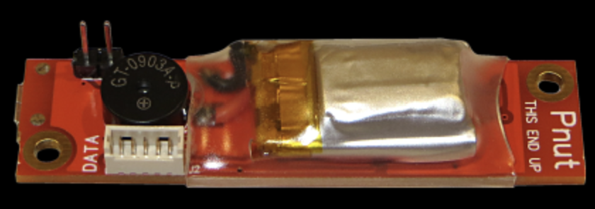
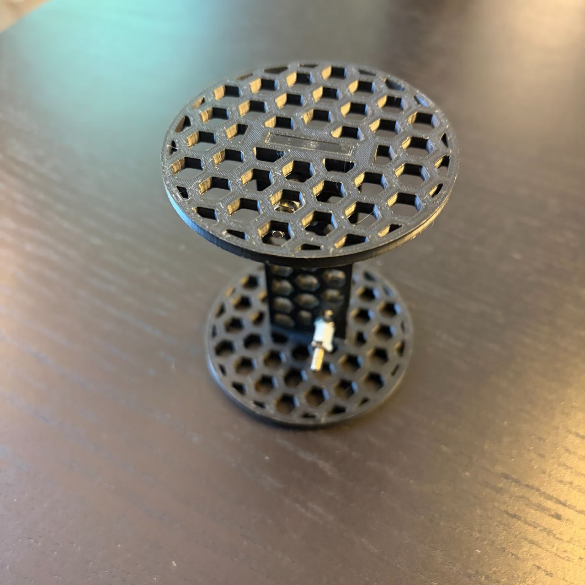
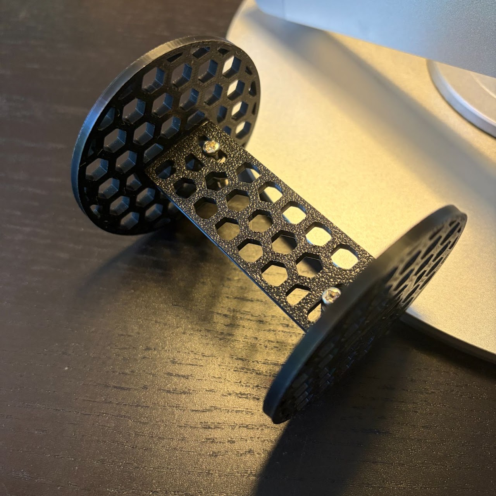
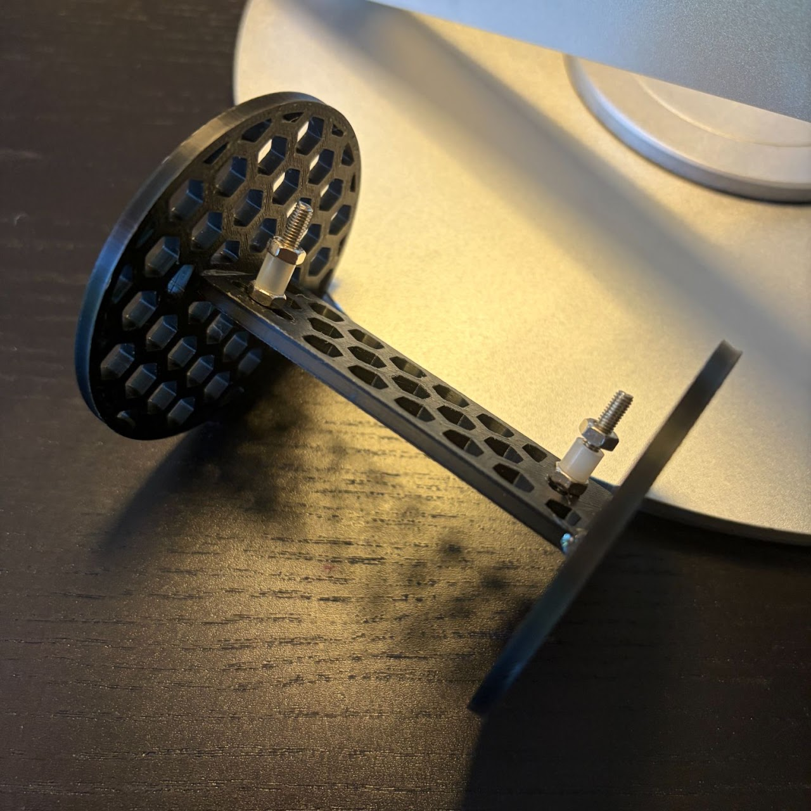
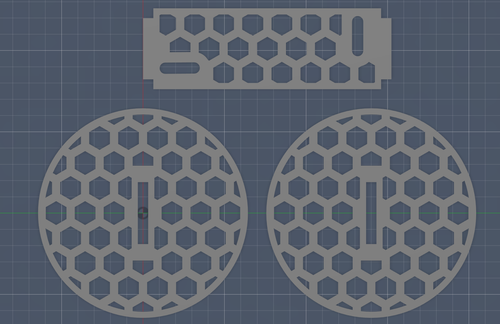
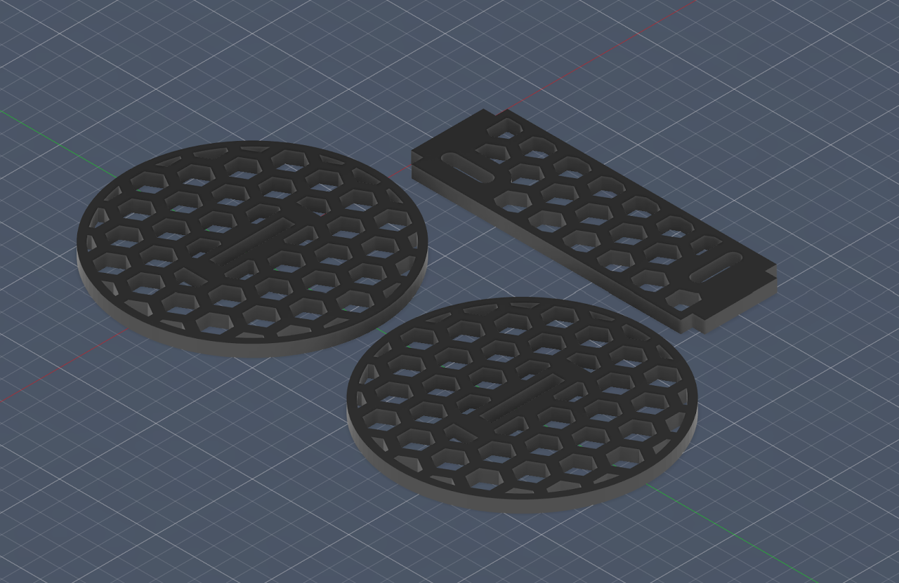

This project was for the whole of Oakton Rocketry (~8 teams used it). As a result, it was important that the design was as simple and easy to produce as possible. I designed it to be manufacturable both by 3d printing or by laser-cutting (1/8 in thick basswood). In the end, I opted for 3d-printing when I produced them for each team as that was what I had the best access to but teams could laser-cut it themselves if they wanted to.

An Altimeter is a device that measures the peak altitude (apogee) of the rocket. This altimeter holder was designed for a PerfectFlite Pnut altimeter, shown on the left. The Altimeter is fixed to the holder using two 4-40 machine screws. I made plastic standoffs using plastic tubing and we used nylon washers (not pictured below) to protect the altimeter (and also prevent any unlikely short-circuiting) as these altimeters are quite expensive.



The Altimeter Holder was designed in Fusion360. It consists of 3 pieces (not including hardware) that is epoxied together.

